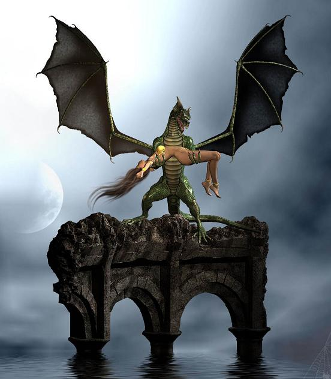

Forums galactiques > Taverne galactique : lieu de discussion informel > Charlotte !
| Papy Mougeot Réputation à la taverne : 10 30/06 ETU 19:23 | Score : 11 Détails C'est Papy Mougeot !
Belle Charlotte Si J'peux m'permettre, j'crois qu'je suis tombé amoureux de toi ! J'ai un truc à t'proposer, pasque t'es ben jeune, hein ! Bon, j'vais pas tourner autour du pot : j'ai un immense savoir, qu'j'ai acquis durant mes 60 ans d'vie et j'suis fier d'me déclarer excellent à PES 6 : Pédagogie d'Education sexuelle 6ème Dan ! Et j'compte ben t'en apprendre plus pasque t'vas arriver à un âge où les manouches en moto t'chercheront ton petit chmbl... Shmilili... Shblimili... C'était Papy Mougeot ! | ||
| Soda Réputation à la taverne : 706  30/06 ETU 19:56 | Score : 9 Détails Et dire que je me tapais des discours de malade pour séduire Demy.....si il se fait charlotte avec ca, je deviens gay..
| ||
| Retoris Réputation à la taverne : 237  30/06 ETU 20:41 | Score : 5 Détails
Escuse-moi papy Mougeot mais Charlotte est déjà prise. Retoris, bourreau des coeurs? Faites-moi rire! | ||
| Charlotte Réputation à la taverne : 135  30/06 ETU 21:19 | Score : 5 Détails Euh...
C'est sympathique, mais je ne crois pas vous connaître... On s'est déjà croisé quelque part? A une soirée / déjeuner / dîner? Même si je ne suis pas prise, je ne pense pas que... que euh... je sois faite pour vous. Vous voyez, je suis encore peut être trop jeune et coincée pour vous. Mais prenez ma brunasse, lafy nayu, elle saura combler vos désirs! Mais bonne continuation dans votre quête de l'amour parfait! Je vous soutient à fond... Vas-y ma brunasse! Montre lui de quoi t'es capable! Aïe, patapé!!! | ||
| Papy Mougeot Réputation à la taverne : 10 30/06 ETU 22:04 | Score : 7 Détails C'est Papy Mougeot !
J'veux pas d'ta grognasse, Charlotte ! J'ai proposé de t'apprendre c'que j'sais sur "Comment on fait les enfants", j'parie qu'tes vieux t'ont parlé des cygognes ? J'vas donc te donner ta première leçon : Charlotte, t'sais, pour faire le petit Gérard qui fume du hackik là-bas, ben j'ai attrappé l'cul d'la voisine et son mari s'est pointé... J'ai eu le nez pété et les yeux pochés ; la voisine a hurlé "oh oui" toute la nuit et 9 mois plus tard, Gérard est arrivé... Conclusion : tes vieux t'ont menti pasque c'est pas des cygognes qu'j'ai vu, c'est les poings de Marcel ! Alors, si tu veux des gosses avec moi, cogne ! C'était Papy Mougeot ! | ||
| Unknow Réputation à la taverne : 225  30/06 ETU 22:17 | Score : 3 Détails Il est dingue lui, jvais lui apprendre à parler comme cela à ma demoiselle!
Non je ne suis pas avec, mais le premier qui ose lui parler comme cela jlui refais le dentier en moins de temps qu'il faut pour que tu t'en aperçoive, donc s'il te plaît tu vas prendre tes valises mon vieu et déguérpir d'ici!^^ En faite, Lafy n'est pas une grognasse, alors fait gaffe à tes paroles mon tit vieu!^^ Allé mon vieu, la sortit (>^.^)> C'est là <(^.^<) Jprécise, je ne suis pas là pour te ruiner tes espoirs de ptit fou mais juste pour te préciser que premiérement les avances c'est pas de ton âge où au pire va voir les vieilles de la galaxie, hé oui jt'assure il y en n'a! Bon j'espere que tu n'a pas fait d'infrarctuse, car sinon jpourrais plus m'amuse au dentiste! Merci de ta compréhension! Unknow Garde du corps à domicile^^ | ||
| Papy Mougeot Réputation à la taverne : 10 30/06 ETU 22:33 | Score : 2 Détails HRP : du calme. C'est que du rp... Si ça gène ta copine, elle est assez grande pour me le dire !
| ||
| Unknow Réputation à la taverne : 225 30/06 ETU 22:42 | Score : -1 Détails Papy, retourne [RP] aprés on verra.^^
| ||
| Thomas Réputation à la taverne : 335  30/06 ETU 23:56 | Score : 4 Détails Grand-père, je vous prierai de bien vouloir respecter la gent féminine, sans laquelle vous ne seriez pas né. Bien sur, cela aurait été un soulagement pour tous, mais que voulez-vous, on ne choisit pas ses enfants, je ne blâmerais pas votre si charmante mère. Le père, à la limite...
Messire Unknown, bien que je partage votre opinion, je crois qu'un peu de calme et de "classe" ne serait pas de mauvais goût. Mademoiselle Charlotte, mes hommages. Cela reste RP, bien entendu... ;) | ||
| Unknow Réputation à la taverne : 225 01/07 ETU 09:41 | Score : 4 Détails Thomas vous êtes un homme bon, et j'aime cela, je me suis emporter trop vite comme toujours, et je m'en excuse fort!
Mais j'ai toujours haï les personnes ne respectant pas les gente demoiselle telle que Charlotte! Et de plus jvoulais me défouler un peu, on ne peut m'en vouloir, je suis si peu ici, que quand j'en viens je suis sur-exiter^^. Merci d'accepter à tous mes insultes! Unknow. Garde du corp un peu débile | ||
| Charlotte Réputation à la taverne : 135 01/07 ETU 09:43 | Score : 4 Détails Ah? Comment ça les bébés ne sont pas amenés par les cygognes? Expliquez moi un peu tout cela, car ça voudrait dire qu'on m'a menti...
Tiens, viens avec moi, tu m'expliquera tout cela à l'abri des regards indiscrets. J'ai soif d'apprendre un peu mieux tout cela! Psssst... Fais attention à Unknow, il est sympa mais cogne fort! La personne idéale pour faire une enfant! | ||
| Retoris Réputation à la taverne : 237 01/07 ETU 10:12 | Score : 4 Détails O_O
Bonne chance papy! Je me fait chier à bien parler et à faire attention à ce que je fais et voilà comment je suis remercié... Bon, on prend le plan de secours...^^ Méta! Tu sais comment on fait les bébés? ^^ | ||
| Metamorphosis Réputation à la taverne : 658  01/07 ETU 10:46  | Score : 5 Détails
Heu... j'ai su... mais ya longtemps ! Faut que je retrouve mes archives.... Atchoum ! Que de poussière... Dis, Réto, t'as pas une autre question ? | ||
| Black'mor Réputation à la taverne : 31  01/07 ETU 11:10 | Score : 1 Détails Heu... de ce que j'en sais y'a des histoires de graines... c'est pas ça ...
M'enfin, quand je pense que je croyais qu'il fallait faire de joli discours, et être un tant soit peu romantique pour plaire aux dames... | ||
| Unknow Réputation à la taverne : 225 01/07 ETU 11:55 | Score : 3 Détails Je suis d'accord avec toi Black, j'ai mis des années à savoir leurs parler et désormais que j'ai trouver le secret de la poésie, elle ne l'aime plus!
Ces femmes sont bien trop compliqué à mon goût...mais charlotte est bien trop belle pour que nous abandonnions! Charlotte, Tes yeux m'emméne aux septiéme cieux! Tes lévres sont pour moi un réves! Tes cheveux sont si soyeux! Alors comme cela, sa te plait ma belle?! | ||
| Roots Boy Réputation à la taverne : 923  01/07 ETU 11:58 | Score : 15 Détails "Charlotte baisse ta culotte, c'est moi qui pilote !!"
Shagasse !! | ||
| Papy Mougeot Réputation à la taverne : 10 01/07 ETU 15:51 | Score : -3 Détails C'est Papy Mougeot !
Hey, les gars, cette jeune fille a bien dit qu'elle voulait qu'je lui enseigne tout mon savoir, ayez un peu de tenue, faut quand même pas déconner, hein ! Alors, Charlotte, moi, j't'ai raconté l'arrivée du petit Gérard, mais on m'avait dit : Au début, ça fait mal, mais quand on le refait et qu’on le refait, ça devient super bien ! D'après mon expérience, ça fait toujours aussi mal de se faire taper par le mari d'la voisine ! Y'a aut'chose qu'j'ai pas personnellement essayé, c'est d'te mettre ma clé à mollette dans la partie la plus poilue de ton corps... Prend une clé à mollette dans sa boite à outils et regarde Charlotte de la tète aux pieds. Euh... Ah, voila des poils ! Lève les bras, je te mets mon outil et dans 9 mois, on a un gosse ! C'était Papy Mougeot ! | ||
| Unknow Réputation à la taverne : 225 01/07 ETU 16:03 | Score : 1 Détails Et ptit vieux!
Comme la dit Charlotte, "Psssst... Fais attention à Unknow, il est sympa mais cogne fort! La personne idéale pour faire une enfant!" Donc si t'a mal compris, je te traduis ce qu'elle voulais interpréter par cela! Unknow leva son bras et alors le ptit vieux se mit à courir dans tous les sens Hé...attend, jvoulais juste te serré la main pour te dire que jsuis plus diplomate que cela! En tout cas, les morveux sa ne fait pas comme sa, jt'assure! Si tu veut jpeut t'aider à comprendre comment on l'ai fait mais par contre une régle d'or dans l'apprentissage, "Tu ne demande jamais à ton professeur de te montrer dans tous ces détails ce qu'il te dit...". Un prof à toujours raison, et même quand il à tord que tu le sais, tu te tais et tu dit seulement avec un grand sourire "Oui monsieur!" Bah vous voyez quand il veut il est tout calme!!!^^ | ||
| Requiem Réputation à la taverne : 1538  01/07 ETU 16:35 | Score : 6 Détails Heeeey!! Héhéhé! Moi je sais comment on fait les gniars! Alors d'abord faut que la femme ecarte les..
La ferme Claudia! Tu vas exiter le vieu... Ah... Rooh... Mais je peux jamais rien dire!! | ||
| Unknow Réputation à la taverne : 225 01/07 ETU 16:56 | Score : 2 Détails Hé Claudia, tu est vraiment dégeulasse de parler comme cela!
Une voix au fond de la salle cria alors 'oui c'est vrai il y a des petit ici! Nan mais! Quelle petit? m'en fou des petits moi! Jdit qu'il est dégueulasse car le Pti Vieux, il m'a donner un paquet de fric pour que jlui dise la vérité et l'autre Claudia elle se raméne et lui dit tout! Claudia à cause de toi jviens de perdre 1000Ma et de gagner un pti vieu en chaleur! Tu est vraiment incorigible^^ Vraiment!^^ |
Forums galactiques > Taverne galactique : lieu de discussion informel > Charlotte !